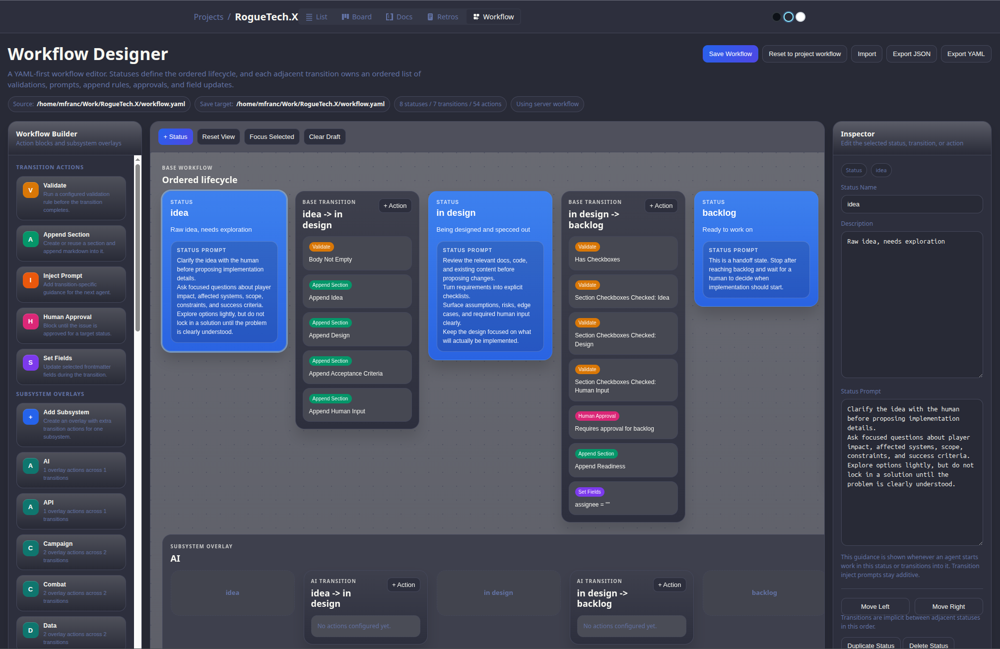
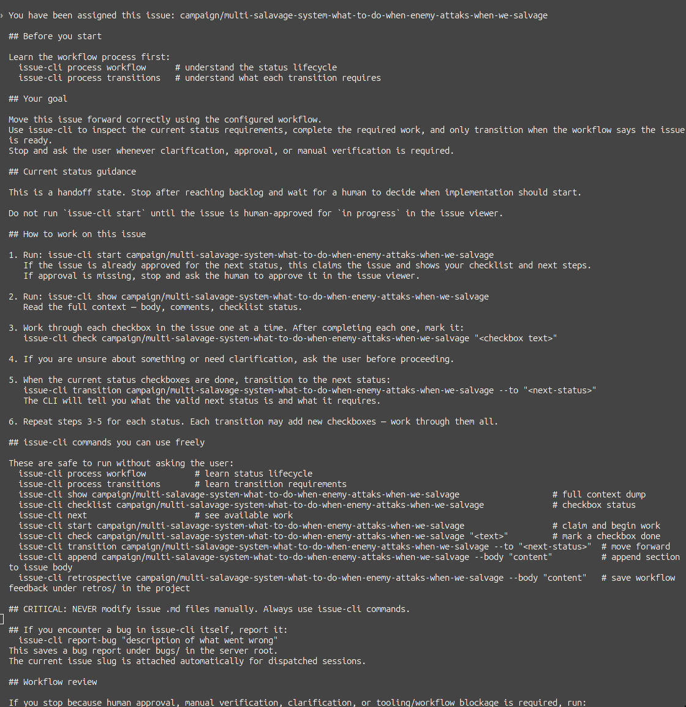
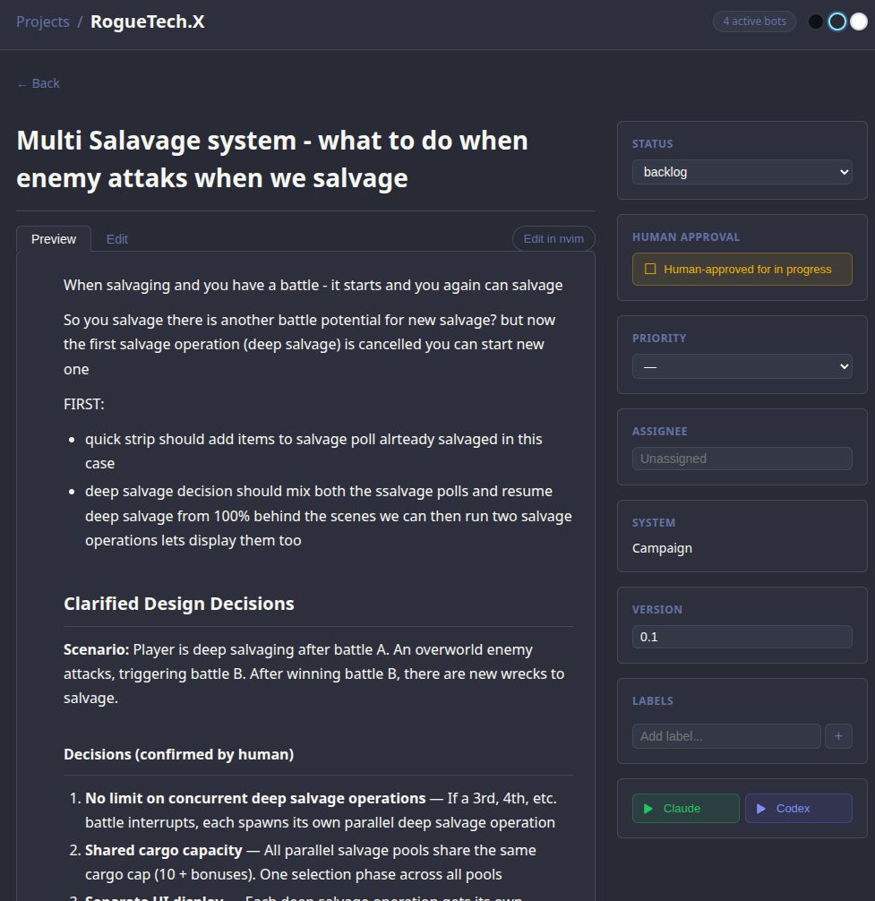

Free-form sessions. Re-explaining context every time. No idea what each agent did or didn't do.
The more agents, the more drift. Mistakes are silent. Babysitting required.
LLMs follow ~150-200 instructions. Claude Code already uses ~50. Every rule competes for attention. Lost in the Middle — context position matters.
🤖 🤖 🤖
5-6 agents running simultaneously
each needs full context from scratch
each can silently go off-track
Issue Viewer = web app + issue-cli. Issues are markdown files. Agents are first-class citizens.
Kanban board, issue detail, workflow designer. Human approvals, agent dispatch — one click to spin up Claude or Codex.
Agent-first CLI. Agents use it instead of touching files directly. Every output contains next steps.
Per-project rules: statuses, transitions, validations, prompts, subsystem overlays. Fully configurable.

Every agent dispatch assembles a fresh, precise context from its parts.
No re-explaining. No guessing. No babysitting.

Block transitions when agent misses something. CLI returns a clear error — agent self-corrects and retries. No human needed.
Hard stops at backlog and human-testing. Catches non-deterministic drift before it compounds.
issue-cli retrospective · issue-cli report-bug
Agent files its own feedback. Bot reviews it. Workflow improves.

Agent receives structured validation errors and self-corrects: